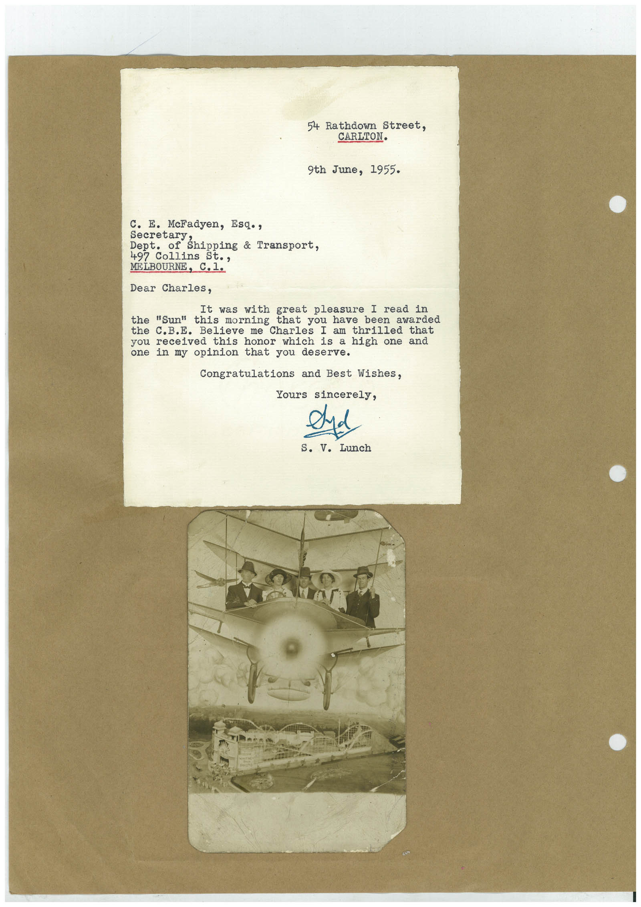

Book 1 · scan 130


Description
Transcription
Context
Review notes
Compare the machine draft with the scan. Handwriting and names need human review.
Artifacts
Edit the artifacts field in this note’s frontmatter to change these records. This summary is generated.
B01-S130-A01 — Letter & Photo — Book 1, scan 130
Types: Typed document, Letter, Photo
Scope: Whole scanned page; individual items can be split out during review.
Caption: Not mapped yet.
Caption source: Not recorded yet.
Caption status: unmapped
Machine transcription
54 Rathdown Street, CARLTON. 9th June, 1955. c. E. McFadyen, Esq., Secretar Shipping & Transport, Dept. of 497 Collins St., MELBOURNE, C.1. Dear Charles, It was with great pleasure I read in "Sun" this morning that you have been awarded the C.B.E. Believe me Charles I am thrilled received this honor which is a high one and one in my opinion that you deserve. Congratulations and Best Wishes, Yours sincerely, s. V. Lunch